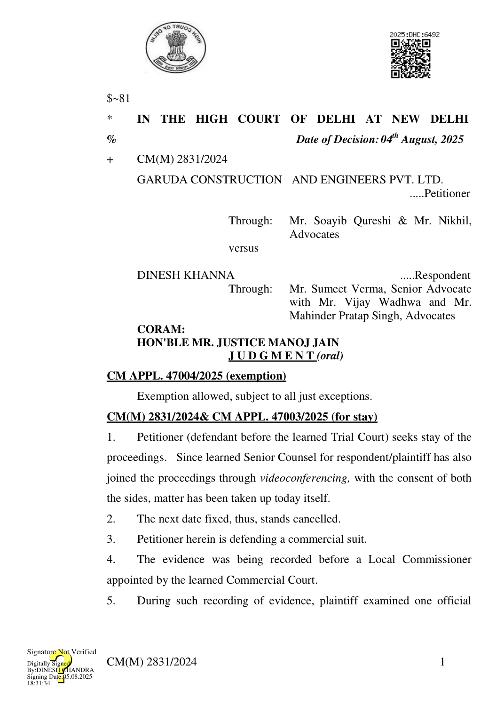

from Delhi Police.
- Such official, a summoned witness, brought certain record on 16.03.2024 and was examined.
- When the case was at the stage of defendant’s evidence, the request came from the side of defendant to call Delhi Police official with certain record and the grievance is with respect to rejection of his such request.
- Learned Senior Counsel for respondent/plaintiff asserts that the present petition has been filed by suppressing material facts and the crux of testimony of DW1 was not even brought before this Court. He submits that since there is suppression of facts, even otherwise, the petitioner is not entitled to be given any indulgence by this Court.
- The Court has gone through testimony of PW4 Mr. Kailash Chandra, Head Constable with Delhi Police recorded on 16.03.2024.
- The witness was a summoned witness and he brought certain record with respect to the visitors and deposed that without a visitor-pass, neither any person nor any vehicle could enter Delhi Police Headquarters premises.
- It is not amply clear as to why there is no cross-examination of this witness. It is also not very clear whether the witness was, actually, tendered for cross-examination by the learned Local Commissioner or not.
- After hearing arguments for some time, this Court, though, does not find any compelling reason to permit the defendant to examine any official from Delhi Police, the present petition is disposed of with liberty to petitioner/defendant to cross-examine PW4 HC Kailash Chandra.
- The next date before the learned Trial Court is stated to be 13.08.2025 and an application would be filed by defendant before the learned Trial Court seeking cross-examination and the learned Trial Court would give date for CM(M) 2831/2024 2 such cross-examination. Let it be recorded by the Court itself.
- In case, the defendant requires certain documents for the purposes of cross-examination, details thereof be mentioned in the proposed application so that the witness brings those documents along and there is no delay in the disposal of the suit, which is stated to be at the stage of final arguments.
- For causing delay in the matter, petitioner (defendant) is burdened with cost of Rs. 10,000/- which shall be payable to the opposite side on the next date of hearing i.e. 13.08.2025.
- Petition stands disposed of in aforesaid terms.
(MANOJ JAIN) JUDGE AUGUST 4, 2025/dr/js CM(M) 2831/2024 3